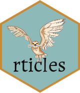

class: center, middle, inverse, title-slide # Reproducible thesis writing with R Markdown ### <span style="color:#06c280">Dr. Priyanga D. Talagala</span> ### <span style="color:#06c280">Research Lounge Meet, University of Moratuwa</span> ### <span style="color:#06c280">18/10/2022</span> </br></br> --- class: inverse, middle, center # rticle R package <img src="fig/logo.png" width="20%" style="display: block; margin: auto;" /> The rticles R package provides a suite of custom R Markdown LaTeX formats and templates for authoring journal articles and conference submissions. --- .pull-left[ <img src="fig/oddstream2.png" width="100%" style="display: block; margin: auto;" /> ].pull-right[ <img src="fig/oddstream1.png" width="100%" style="display: block; margin: auto;" /> ] .footnote[ ERA ranking A* Journal, SJR Q1] --- # JCGS - Instructions for authors <img src="fig/JCGS.png" width="100%" style="display: block; margin: auto;" /> --- class: middle .pull-left[ <img src="fig/WRR.png" width="100%" style="display: block; margin: auto;" /> ].pull-right[ - ERA ranking A* Journal, SJR Q1 - *"...I applaud the authors for making the code available in GitHub and for including the datasets used in this paper along with their code. That’s a nice touch...."* ] --- ## Installation You can install and use rticles from CRAN as follows: `install.packages("rticles")` -- ## Templates - Different journal templates are available through the R package `rticle`. https://github.com/rstudio/rticles#templates -- - You can also get the list of available journal names with `rticles::journals()`. --- ## Using rticles File -> New File -> R Markdown. <img src="fig/rmd1.png" width="50%" style="display: block; margin: auto;" /> --- It will open the dialog box where you can select from one of the available templates: Example 1: Journal of Open Source Software Article <img src="fig/JOSS1.png" width="50%" style="display: block; margin: auto;" /> --- ## Directory structure Example 1: Journal of Open Source Software Article <img src="fig/JOSS2.png" width="100%" style="display: block; margin: auto;" /> --- ## Example 1: Journal of Open Source Software Article <img src="fig/JOSS3.png" width="90%" style="display: block; margin: auto;" /> --- ## Example 1: Journal of Open Source Software Article <img src="fig/JOSS5.png" width="90%" style="display: block; margin: auto;" /> --- ## Directory structure Example 1: Journal of Open Source Software Article <img src="fig/JOSS4.png" width="100%" style="display: block; margin: auto;" /> --- ## Example 2: IEEE Transactions Journal Article <img src="fig/IEEE1.png" width="50%" style="display: block; margin: auto;" /> --- ## Example 2: IEEE Transactions Journal Article <img src="fig/IEEE2.png" width="80%" style="display: block; margin: auto;" /> --- ## Example 2: IEEE Transactions Journal Article <img src="fig/IEEE3.png" width="80%" style="display: block; margin: auto;" /> --- ## Directory structure Example 2: IEEE Transactions Journal Article <img src="fig/IEEE4.png" width="100%" style="display: block; margin: auto;" /> --- class: inverse, middle, center <i class="fab fa-github "></i><i class="fab fa-twitter "></i> pridiltal and thiyangt # Acknowledgements: This work was supported in part by RETINA research lab funded by the OWSD, a program unit of United Nations Educational, Scientific and Cultural Organization (UNESCO). All rights reserved by Thiyanga S. Talagala and Priyanga D Talagala